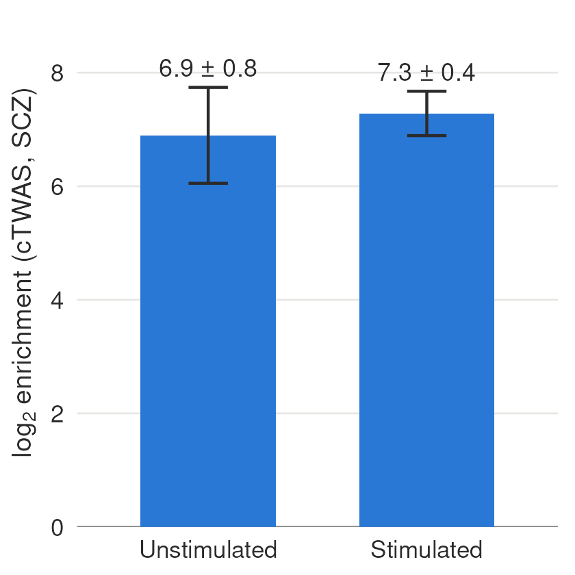
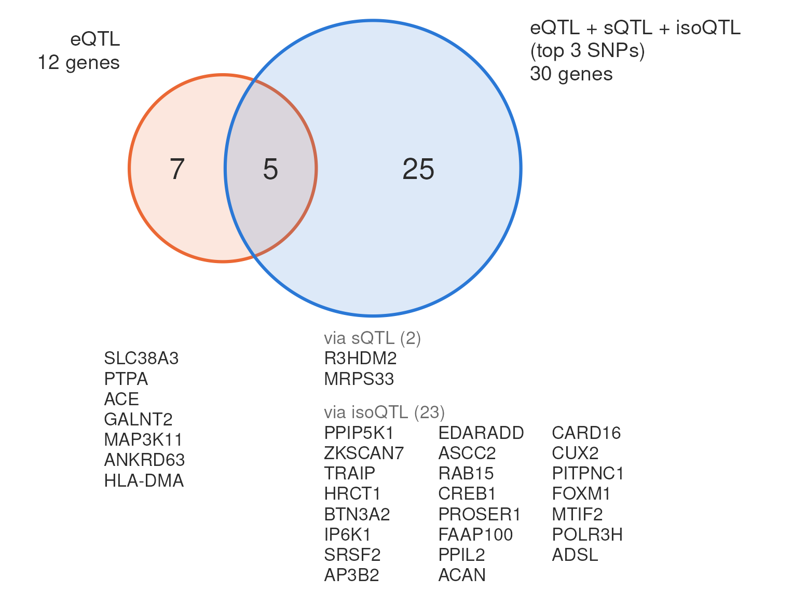

Last updated: 2026-11-07
Checks: 6 1
Knit directory: long_read_rna/
This reproducible R Markdown analysis was created with workflowr (version 1.7.1). The Checks tab describes the reproducibility checks that were applied when the results were created. The Past versions tab lists the development history.
The R Markdown file has unstaged changes. To know which version of
the R Markdown file created these results, you’ll want to first commit
it to the Git repo. If you’re still working on the analysis, you can
ignore this warning. When you’re finished, you can run
wflow_publish to commit the R Markdown file and build the
HTML.
Great job! The global environment was empty. Objects defined in the global environment can affect the analysis in your R Markdown file in unknown ways. For reproduciblity it’s best to always run the code in an empty environment.
The command set.seed(20260908) was run prior to running
the code in the R Markdown file. Setting a seed ensures that any results
that rely on randomness, e.g. subsampling or permutations, are
reproducible.
Great job! Recording the operating system, R version, and package versions is critical for reproducibility.
Nice! There were no cached chunks for this analysis, so you can be confident that you successfully produced the results during this run.
Great job! Using relative paths to the files within your workflowr project makes it easier to run your code on other machines.
Great! You are using Git for version control. Tracking code development and connecting the code version to the results is critical for reproducibility.
The results in this page were generated with repository version adf77a5. See the Past versions tab to see a history of the changes made to the R Markdown and HTML files.
Note that you need to be careful to ensure that all relevant files for
the analysis have been committed to Git prior to generating the results
(you can use wflow_publish or
wflow_git_commit). workflowr only checks the R Markdown
file, but you know if there are other scripts or data files that it
depends on. Below is the status of the Git repository when the results
were generated:
Unstaged changes:
Modified: analysis/grant_figures.Rmd
Modified: analysis/isolaser_ctwas_scz_filter.Rmd
Note that any generated files, e.g. HTML, png, CSS, etc., are not included in this status report because it is ok for generated content to have uncommitted changes.
These are the previous versions of the repository in which changes were
made to the R Markdown (analysis/grant_figures.Rmd) and
HTML (docs/grant_figures.html) files. If you’ve configured
a remote Git repository (see ?wflow_git_remote), click on
the hyperlinks in the table below to view the files as they were in that
past version.
| File | Version | Author | Date | Message |
|---|---|---|---|---|
| Rmd | adf77a5 | XSun | 2026-11-07 | update |
| html | adf77a5 | XSun | 2026-11-07 | update |
| Rmd | ce87405 | XSun | 2026-11-07 | update |
| html | ce87405 | XSun | 2026-11-07 | update |
| Rmd | 6edb87b | XSun | 2026-11-06 | update |
| html | 6edb87b | XSun | 2026-11-06 | update |
| Rmd | fe2d867 | XSun | 2026-11-06 | update |
| html | fe2d867 | XSun | 2026-11-06 | update |
Each panel says what it shows, which results it uses and where the
details are. All allele-specific results are from read-based
isoLASER (each read’s own alignment decides whether it includes
the tested exonic part) and use isoLASER + filter:
isoLASER’s cis label, recomputed on the panel-heterozygous
donors with at least 10 reads each, plus |ΔPSI| ≥ 0.05. No q-value
cutoff.

log_enrichment / ln 2), ± 1 SE, in the PGC
SCZ GWAS (ieu-b-5102). Unstimulated 6.9 ± 0.8 (p =
2.4e-06); stimulated 7.3 ± 0.4 (p = 2.8e-24).From the joint cTWAS run with 0, 1 and 6 hr as separate
groups (the same isoLASER + filter weights, 602 traits): 9
genes reach combined_pip ≥ 0.8.
| Gene | PIP | SNP | ΔPSI | Affected exon |
|---|---|---|---|---|
| LY6H | 0.99 | rs10109061 | +0.25 | chr8:143,160,310-143,160,321 (-) |
| NDRG4 | 0.99 | rs42945 | +0.25 | chr16:58,504,619-58,504,629 (+) |
| MYT1L | 0.97 | rs3749051 | -0.06 | chr2:2,281,931-2,284,093 (-) |
| SF3B1 | 0.95 | rs788023 | -0.11 | chr2:197,418,896-197,418,951 (-) |
| CNPPD1 | 0.88 | rs1127102 | +0.41 | chr2:219,172,418-219,172,654 (-) |
| PIGF | 0.88 | rs1824050 | -0.19 | chr2:46,588,075-46,588,179 (-) |
| GOPC | 0.86 | rs3752848 | -0.10 | chr6:117,577,448-117,577,471 (-) |
| MRPL43 | 0.83 | rs7184 | +0.12 | chr10:100,986,687-100,986,748 (-) |
| YWHAE | 0.81 | rs9393 | -0.06 | chr17:1,354,211-1,354,347 (-) |
combined_pip, over all of
the gene’s exonic parts and timepoints.Only 6 hr is shown: it is the timepoint that gives both genes their cTWAS PIP.
cTWAS for SCZ with GTEx v8 Brain Cerebellum QTLs: eQTLs and sQTLs (the M-cTWAS paper’s PredictDB models) and isoQTLs (isoform-expression QTLs from the isoTWAS models of Bhattacharya et al. 2023). For each isoform we kept the 3 SNPs with the largest standardised weights (the top-3 run). Details: cTWAS with GTEx molecular QTLs, with the post-processing in its own section.

Genes with combined_pip ≥ 0.8 in an eQTL-only run and in
the eQTL + sQTL + isoQTL (top 3) run (same settings), both after
post-processing (region merging and the LD-mismatch check, as in the
M-cTWAS paper). The joint run finds 25 genes the eQTL-only run misses
(23 via isoQTLs, 2 via sQTLs; listed in the figure, by
combined_pip) and misses 7. “Via” is the QTL type with the
largest PIP for that gene. Of the 7 missed, 3 are just below the cutoff
in the joint run (ANKRD63 0.799, ACE 0.779, PTPA 0.727) and 4 drop
further (MAP3K11 0.38, GALNT2 0.01, SLC38A3 0.00, HLA-DMA 0.00).
R version 4.2.0 (2022-04-22)
Platform: x86_64-pc-linux-gnu (64-bit)
Running under: Red Hat Enterprise Linux 8.10 (Ootpa)
Matrix products: default
BLAS/LAPACK: /software/openblas-0.3.13-el8-x86_64/lib/libopenblas_skylakexp-r0.3.13.so
locale:
[1] C
attached base packages:
[1] stats graphics grDevices utils datasets methods base
other attached packages:
[1] data.table_1.14.4 workflowr_1.7.1
loaded via a namespace (and not attached):
[1] Rcpp_1.1.1-1.1 bslib_0.3.1 jquerylib_0.1.4 compiler_4.2.0
[5] pillar_1.9.0 later_1.3.0 git2r_0.30.1 tools_4.2.0
[9] getPass_0.2-2 digest_0.6.29 jsonlite_2.0.0 evaluate_0.15
[13] lifecycle_1.0.4 tibble_3.2.1 pkgconfig_2.0.3 rlang_1.1.2
[17] cli_3.6.2 rstudioapi_0.14 yaml_2.3.5 xfun_0.59
[21] fastmap_1.1.0 httr_1.4.8 stringr_1.5.0 knitr_1.51
[25] sass_0.4.1 fs_1.5.2 vctrs_0.6.1 rprojroot_2.0.3
[29] glue_1.6.2 R6_2.5.1 processx_3.5.3 fansi_1.0.3
[33] otel_0.2.0 rmarkdown_2.31 callr_3.7.0 magrittr_2.0.3
[37] whisker_0.4 ps_1.7.0 promises_1.2.0.1 htmltools_0.5.7
[41] httpuv_1.6.5 utf8_1.2.2 stringi_1.7.6